Documentation
Livestock Management System — complete farm management with livestock, sheds, batches, vaccines, food, sales, production and reporting.
1.Introduction
Livestock Management Software is a system that helps farmers record and keep track of their livestocks from purchase, birth all the way to sale. It manages all activities of an animal batch-wise as well as the most important dates in the lifetime of livestock. The system manages cattle, poultry, pigs, goats, rabbits and more — with shed, batch, costing and performance metrics, plus financial tracking from sales. You can also track deaths from a shed, vaccinate batches on schedule, and manage food and production end-to-end.
Product information
Some special feature introductions
Purchase Management
Purchase livestock multi-line and assign it to a shed purchase-wise. Supports multiple suppliers, multi-row invoices, paid & due tracking.
Transfer Management
Move animals from one shed to another and keep the full location history. See which animals were in a particular shed at any given time.
Death Management
Record livestock deaths separately so they don't pollute your active stock or financial counts — with audit trail per shed and batch.
Feed Management
Plan feeding by shed and batch, track how much was consumed, and cost it per ranch so you can make informed operations decisions.
Detailed Livestock Records
Capture breed, birth date, approximate selling price — plus a free-text Notes field per breed and full event history per animal lifetime.
Vaccination System
Define vaccine routes, schedules and doses per livestock variant. Automatic upcoming-dose dashboard, used & wasted tracking.
What's new in this version v3.0.2
Previously in v3.0.1
- Date-range filter on Purchase, Sale, Product Sale and Expense list pages.
- Trash Bin — restore accidentally-deleted records (admin-only).
- Recent Activity panel on the dashboard.
- Livestock Notes — free-text per breed.
- Dashboard alerts — low stock, overdue invoices, upcoming vaccinations.
- CSV Export on primary list pages.
- PDF download on purchase, livestock sale and product sale invoices.
- Configurable timezone, low-stock threshold and overdue-payment days.
2.Installation
You can install this software easily. Follow the steps below and successfully install and enjoy the software.
Step 1 — Create a MySQL database and user
Sign in to your cPanel, VPS or hosting control panel and open the MySQL Databases section. You need three things here:
-
Create a new database — give it any name you like, for example
livestock. Most shared hosts will automatically prefix it with your account name, so the final database name might look likeyouracct_livestock. Use theutf8mb4character set if your panel asks. - Create a new MySQL user with a strong password. Note down the username and password — you'll need them again in Step 3.
- Add the user to the database and grant ALL PRIVILEGES. Without this step the application will fail to connect.
On a VPS or local server (XAMPP / WAMP / Laravel Herd) where you have root access, you can do the same thing from the MySQL shell:
CREATE DATABASE livestock CHARACTER SET utf8mb4 COLLATE utf8mb4_unicode_ci;
CREATE USER 'livestock_user'@'localhost' IDENTIFIED BY 'YourStrongPassword';
GRANT ALL PRIVILEGES ON livestock.* TO 'livestock_user'@'localhost';
FLUSH PRIVILEGES;Step 2 — Import the SQL file
Open phpMyAdmin from your hosting panel and select the database you just created from the left-hand sidebar.
- Click the Import tab at the top.
-
Click Choose File and pick
livestock.sqlfrom the unzipped project folder. The file ships at the root of the project, next toindex.php. - Scroll down and click Go (or Import). On a clean install the import takes a few seconds and a green success message appears.
After the import you should see a list of tables in the left sidebar — livestock,
shed, users, settings and many others. If the table list is
empty, re-check that you selected the right database before clicking Import.
livestock.sql via FTP/File Manager into a folder and import it from the command
line with mysql -u user -p database < livestock.sql, or ask your host to raise
upload_max_filesize in PHP.
Step 3 — Upload the files and configure the database connection
Upload the entire unzipped project folder to your server. On a shared host this is usually done through cPanel's File Manager or an FTP client (FileZilla, WinSCP). You can install in any of these locations:
-
Domain root — the app is reachable at
https://yourdomain.com/. Upload the project contents directly intopublic_html/. -
Sub-directory — the app is reachable at
https://yourdomain.com/livestock/. Upload the project contents intopublic_html/livestock/. -
Sub-domain — the app is reachable at
https://livestock.yourdomain.com/. Upload the project contents into the sub-domain's document root.
Once the files are uploaded, open application/config/database.php in the File Manager's
code editor (or download it, edit locally, and re-upload) and fill in the four database fields with
the credentials you noted in Step 1:
$db['default']['hostname'] = 'Host Name';
$db['default']['username'] = 'Database Username';
$db['default']['password'] = 'Password';
$db['default']['database'] = 'Database Name';What to enter in each field:
hostname— usuallylocalhost. A few hosts use127.0.0.1or a remote host name likemysql.yourdomain.com; check your hosting panel if unsure.username— the MySQL user from Step 1 (e.g.youracct_livestock_user).password— the password you set for that user.database— the database name from Step 1 (e.g.youracct_livestock).
Save the file. Do not change any other lines in database.php.
755 or 775) —
application/cache/, application/cache/sessions/,
application/logs/, uploads/, and files/backups/.
Otherwise login may silently fail, file uploads will be rejected, and backups will not save.
Step 4 — Upload the .htaccess file
The project ships with an .htaccess file that enables clean URLs (so that
auth/login works instead of index.php?/auth/login) and adds basic
security headers. Make sure it is uploaded into the same folder as index.php.
- On most FTP clients hidden files (any file starting with a dot) are not shown by default. In FileZilla turn on Server → Force showing hidden files; in cPanel File Manager tick Show Hidden Files (dotfiles) in the settings dialog. Re-upload if needed.
-
Your server must have Apache's
mod_rewritemodule enabled. On shared hosts this is almost always on by default; on a VPS runa2enmod rewriteand restart Apache. -
If you installed the app in a sub-directory and links return 404, edit the very first line of
.htaccess— changeRewriteBase /toRewriteBase /livestock/(replace with your folder name).
It's done! Move on to Step 5 to verify your install.
Step 5 — Open the site and sign in
Type your URL: www.yourdomain.com/livestock/auth/login. Then enter your username and
password and login.
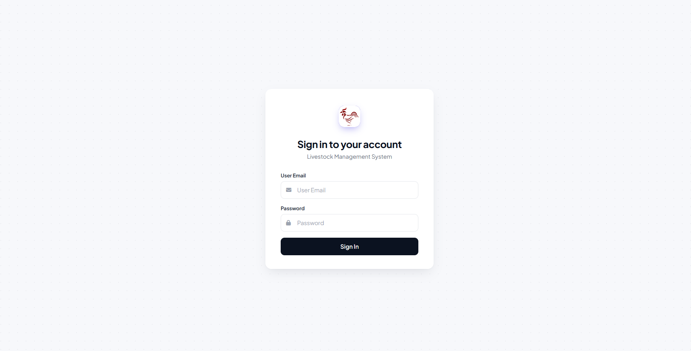
login-page.pngDefault login details
| Role | Username | Password |
|---|---|---|
| Admin | admin@example.com | 12345 |
3.Features
- Livestock Management + notes
- Purchase Management + PDF invoice
- Shed Management
- Shed Management
- Death Management
- Transfer Management
- Batch Management
- Vaccine Management
- Food Management
- Sales Management + PDF invoice
- Production Management
- Reproduction Management
- Supplier Database
- Client Database
- Staff Database
- All Kind of Reports + CSV export
- General Settings + timezone & thresholds
- Multiple Languages
- Date-Range Filter on List Pages v3.0.1
- Trash Bin (restore deleted records) v3.0.1
- Dashboard Alerts (low stock, overdue, upcoming vaccinations) v3.0.1
- Recent Activity Panel v3.0.1
- Database Backup & Restore
4.Integrations
■ Farm Information Setup
The system already has some data in it, but you can change it to your own information from the Settings module.
You can also change the system language from the Language Setup.
Change username and password from the Profile module.
New in v3.0.1: Settings now also has a timezone dropdown (default
Asia/Dhaka), a low-stock threshold (head count at which a batch triggers a
dashboard alert, default 10), and an overdue-payment days threshold (default 7).
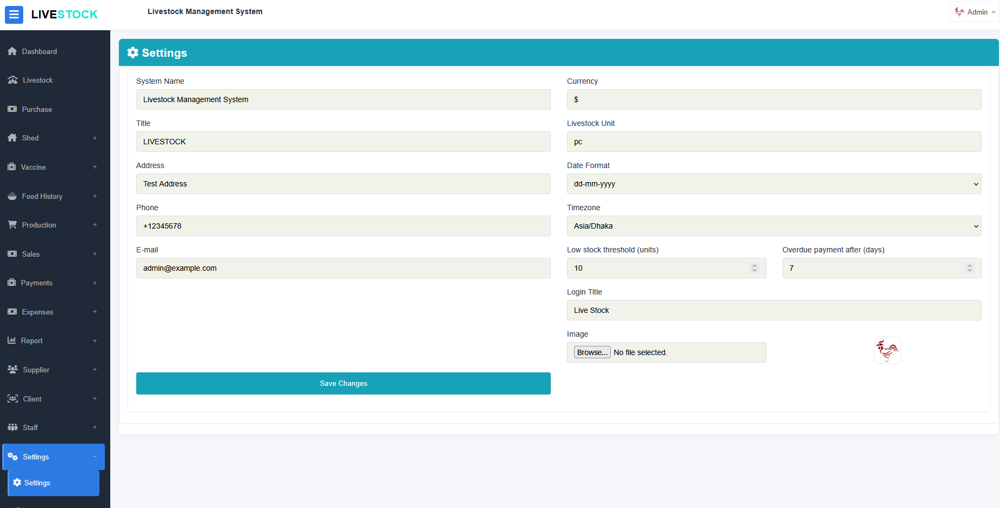
settings.png■ Livestock
→ Livestock
After login, go to the Livestock module and click Add New Livestock button. It will open a popup, fill the input fields and submit.
You can edit and delete livestock.
New in v3.0.1: the Add/Edit form now has a free-text Notes field. Use it to record breed quirks — average milk yield, weight at slaughter, supplier preferences, anything you want next-time-you. Notes never appear on customer invoices.
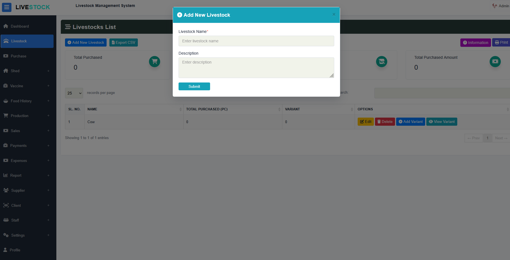
livestock_add.png→ Livestock Variant
After adding livestock you can see the Add Variant button under the created livestock. Click Add Variant to add a new variant under the created livestock.
You can edit and delete a livestock variant. Click View Variant from the livestock list to open the variant list page and then edit the variant.
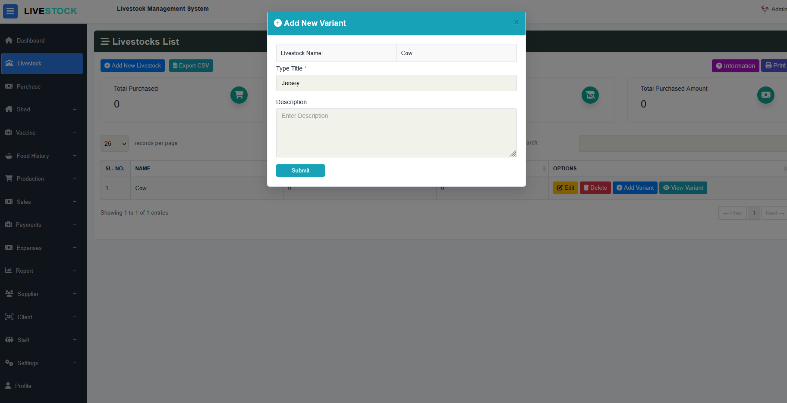
livestock_variant_add.png■ Supplier
→ Add New Supplier
Without creating a supplier you can't purchase livestock. Go to the Supplier module and create a new supplier. After creating the supplier you can see a supplier ledger — all purchase invoices and transactions under this supplier are listed there. Purchase invoice payments are managed from the ledger. You can also edit and delete a supplier from the supplier list.
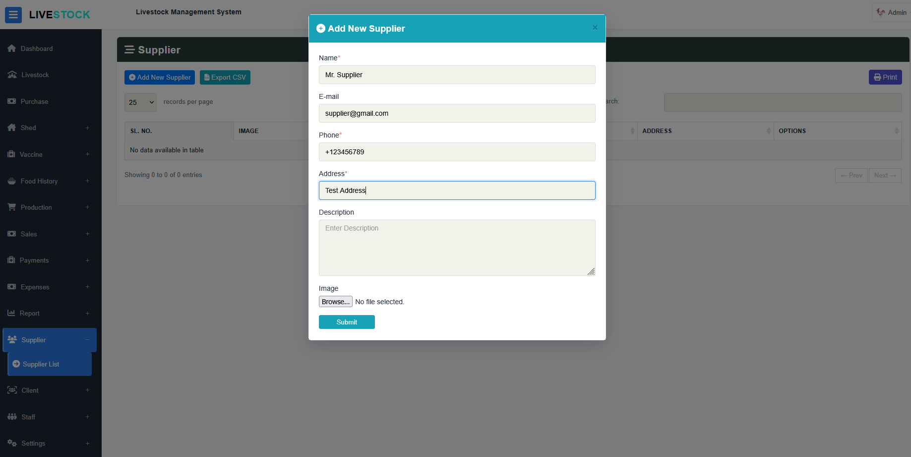
supplier_add.png■ Livestock Purchase
→ Purchase New Livestock
In this module you can purchase livestock. Before purchasing, make sure you have already added livestock, livestock variant and supplier. In every module * means the input field is required.
You can purchase multiple livestock and variants in the same invoice from a supplier.
On the purchase form there's a payment option. Tick the checkbox to record a payment along with the purchase. Remember: you can't pay more money than the purchase amount — the system blocks it.
The invoice is editable and deletable before the purchased livestock is assigned to a shed.
New in v1.2+: on the invoice view page you can now download the invoice as PDF — A4 portrait, UTF-8, ready to email to the supplier.
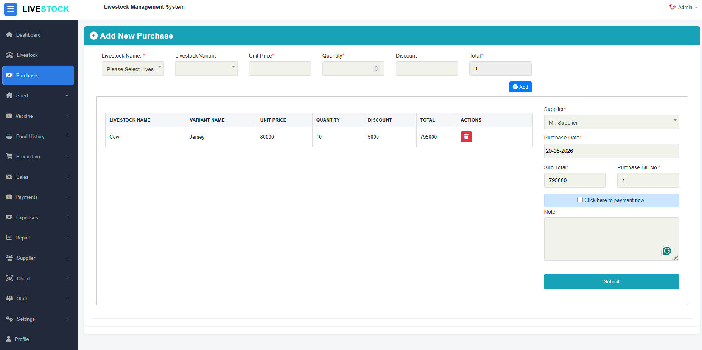
livestock_purchase1.png→ Livestock Purchase Payments
If you want to pay later, go to the Payments module and click Payments Reports — this shows the supplier ledger. You can record multiple payments for one invoice. You can also see the purchase invoice by clicking the Invoice button.
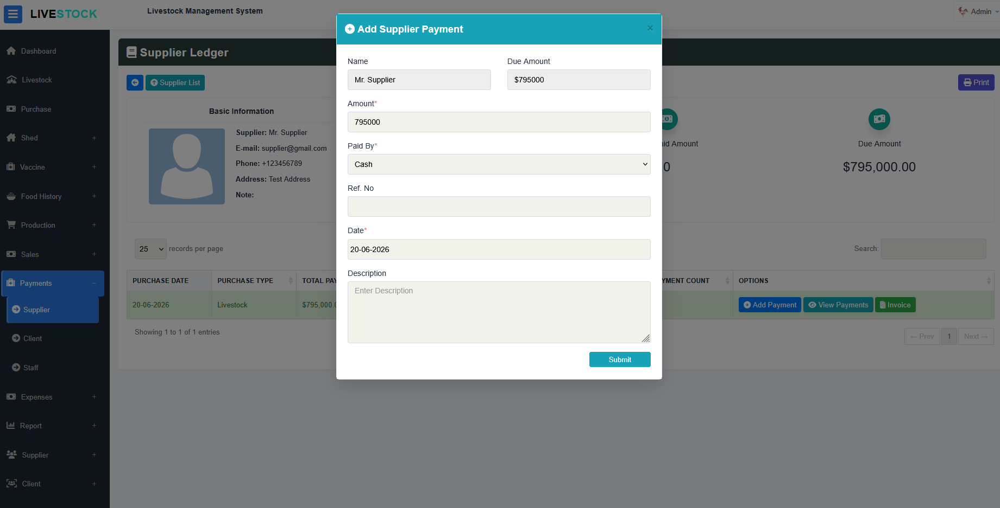
supplier_payment2.png■ Shed
→ Create Livestock Shed
After purchasing livestock you will send purchased livestocks to a shed. For that you have to create a Shed to assign livestock. Go to the Shed module and create a shed.
The shed number is required — it should be unique. You can create multiple sheds.
To view shed details, click the View Details button from the shed list.
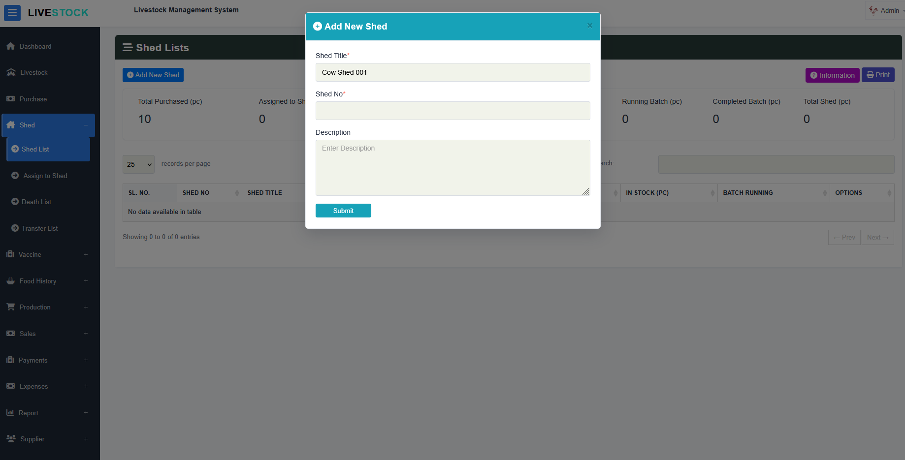
shed.png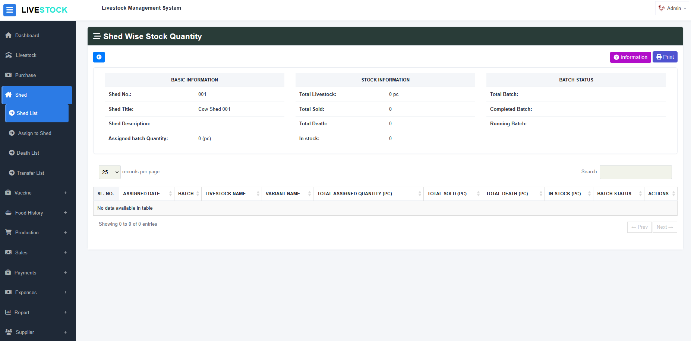
shed_details.png→ Livestock Assign to Shed
You can assign livestock to a shed to nurture the purchased livestocks.
After being purchased, livestock is stored here. From here you can assign livestock to multiple sheds.
Generally when you assign livestock to a shed, the system creates a unique batch number and batch title automatically. Under each shed it generates a new batch for each new assignment.
You can assign the same purchased livestock to multiple sheds and also assign different purchased livestocks to the same shed.
You can assign the same variant from multiple purchases to the same batch. You cannot assign different variants to the same batch.
Go to the Shed module and click Assign to Shed — the assign module opens. Click the Assign button to open the popup, fill in the information and submit.
You can edit assigned livestock for a limited time.
If assigned livestock is already involved in food, vaccine, sale or production modules, you can't edit it. So make sure you assigned the livestock to the correct shed or batch before it is involved in any other module.
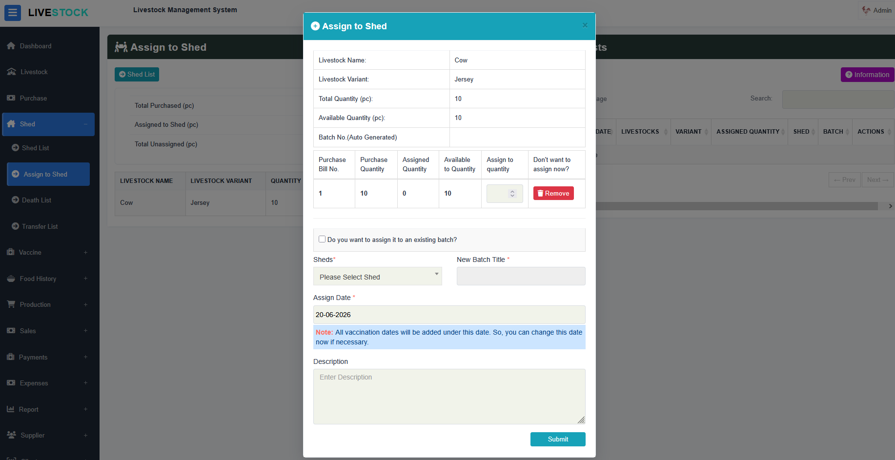
assign_to_shed.pngAfter assigning livestock to a shed, go to the shed list and click View Details. On the details page you can mark the batch as active or inactive.
→ Livestock Death from Shed
If any livestock dies in a shed, you can record it in the death module. Go to the Shed module and click Death List, then select the shed where the livestock died.
Click Add New Death to open the popup. Enter the died quantity and submit. You can edit and delete the death quantity until the batch is completed.
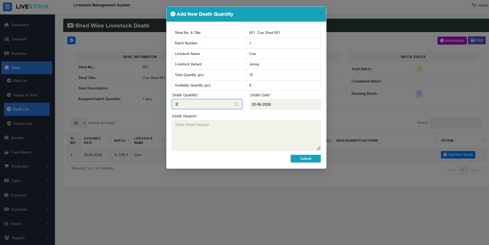
shed_death.png→ Livestock Transfer from Shed to Shed
If you want to transfer livestock from one shed to another, you can do it here.
You can transfer livestock only before the batch is involved in the production or sale module.
When you transfer, all livestocks of the selected batch move to the destination shed.
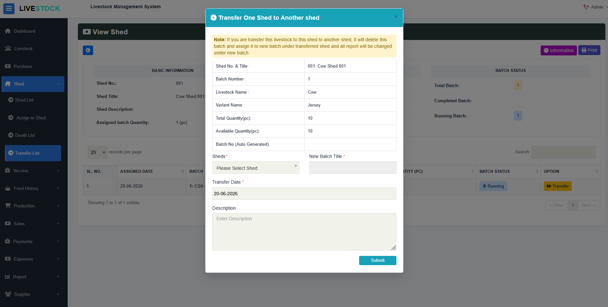
transfer_list.png■ Product Unit
→ Create Product Unit
For Food, Vaccine and Production you need units like litre, kilogram, gram, milligram etc. You can use a short form for each unit: ltr, kg, g, ml etc. Go to the Settings module and create a few units.
You can edit and delete a product unit.
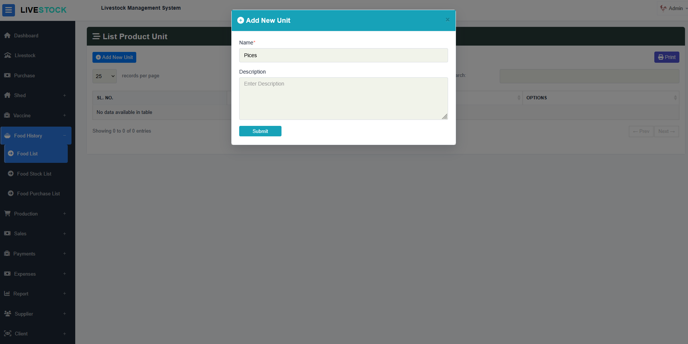
product_unit.png■ Vaccine
This is the vaccine module — from here you can create a new vaccine and make a vaccination schedule.
In the vaccine module you assign vaccine for livestock and variant-wise one time. Next, the system automatically shows you variant-wise vaccination schedules. You can assign each vaccine to multiple variants. You can also assign multiple vaccines for one variant.
You can apply single or multiple doses for livestock variants.
→ Create Vaccine Route
The vaccine route is how you administer the vaccine to the livestock. A vaccine route is required when you assign a dose for a livestock.
Go to the Vaccine module and click Routing from the sidebar to create routes. You can edit and delete a route.
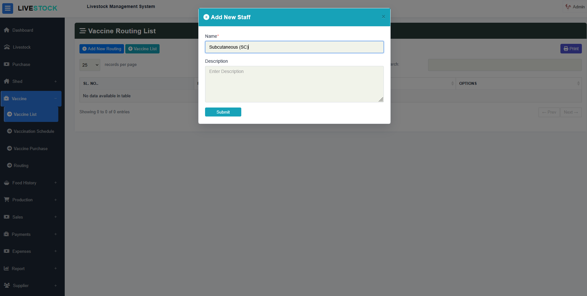
add_vaccine_route.png→ Create Vaccine
From the Vaccine module you can create a new vaccine and make a vaccination schedule. You can edit a vaccine.
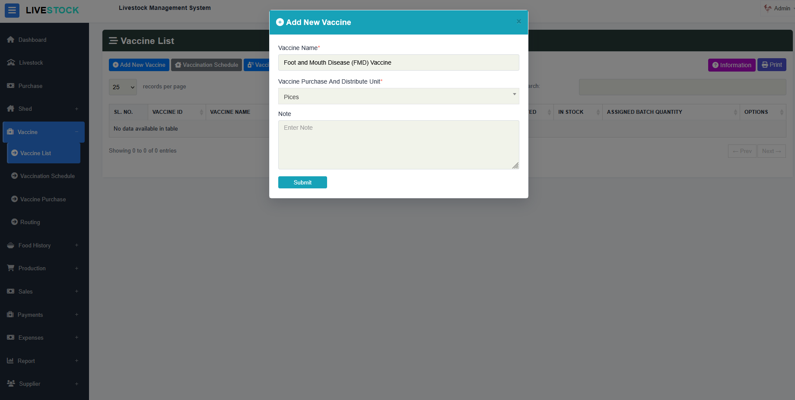
create_new_vaccine.png→ Vaccine Dose Assign
Now assign vaccine to livestock with doses.
Click Assign — it opens a popup. Select livestock, variant, add doses, click Add more dose to add multiple doses, then submit.
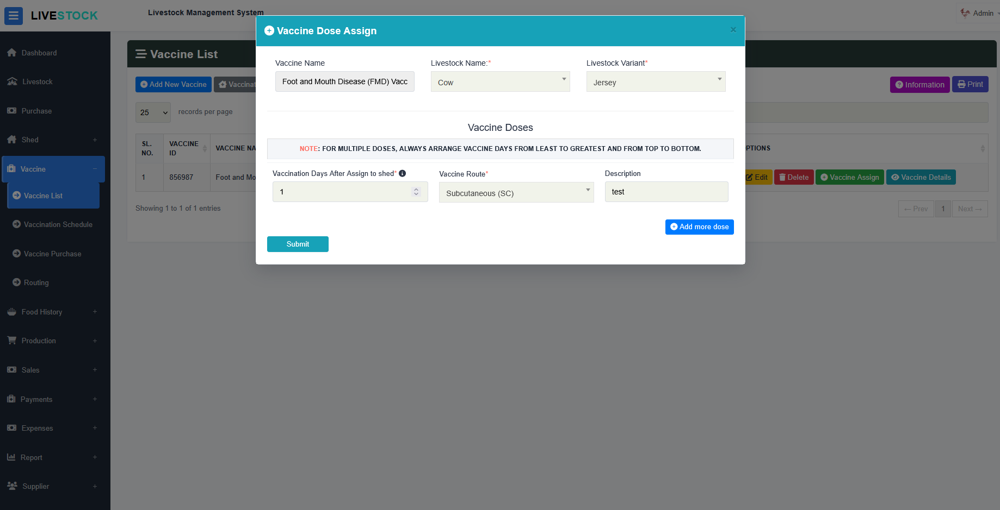
vaccine_dose_assign.pngTo see dose details, click Vaccine Details from the vaccine list.
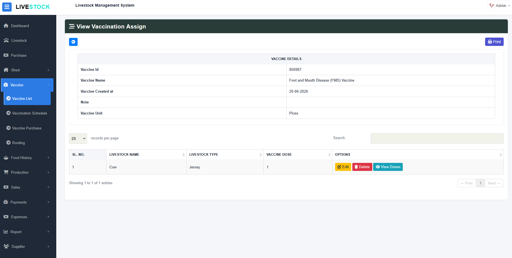
vaccine_assign_list.png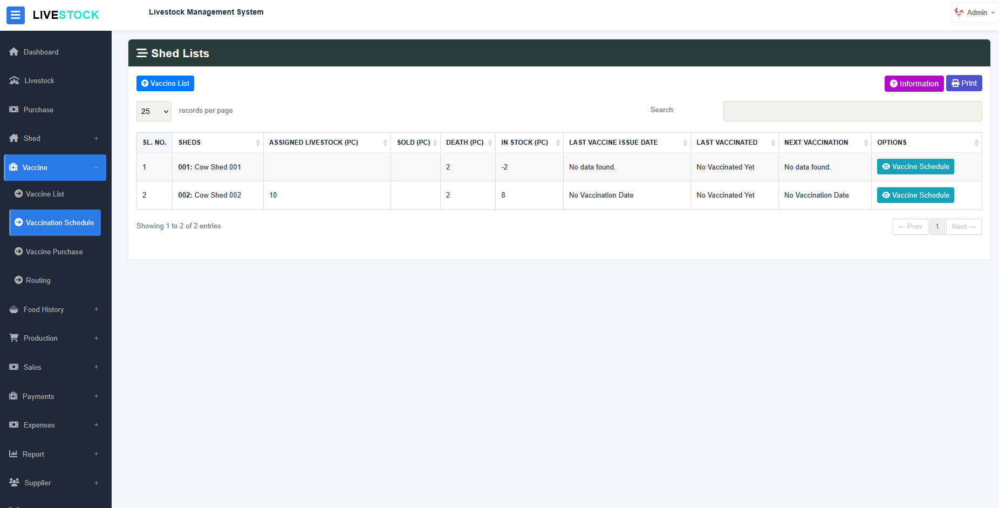
vaccine_doses.png→ Vaccine Purchase
Without purchasing vaccine you can't complete vaccine doses. Go to the vaccine module and purchase vaccine — the flow is the same as livestock purchase.
You can add payments when you purchase or pay later from the payments module. You can also edit and delete a vaccine purchase.
After purchasing vaccine, it is added to vaccine stock in the vaccine list.
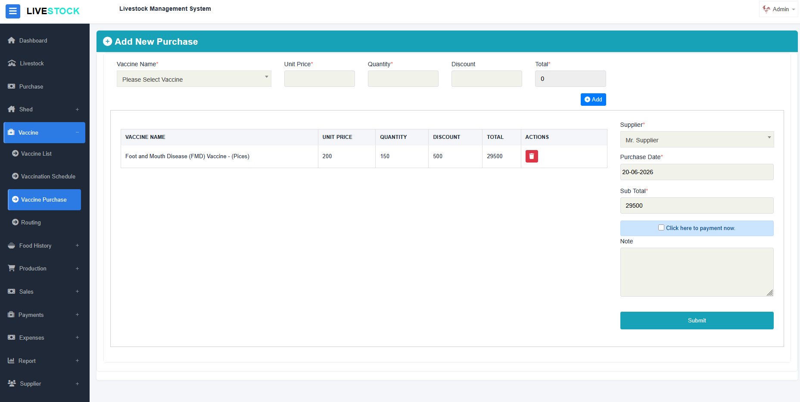
vaccine_purchase.png→ Vaccination Schedule
After assigning and purchasing vaccine, you can apply doses on schedule. Go to the Vaccine Schedule.
After assigning vaccine for livestock and variant-wise, you can see shed-wise vaccination date, the last vaccine issue date, last vaccinated date and next vaccination date.
To complete a vaccination dose, go to Vaccine Schedule and complete the dose. If the batch is active you can issue the dose, otherwise you can't.
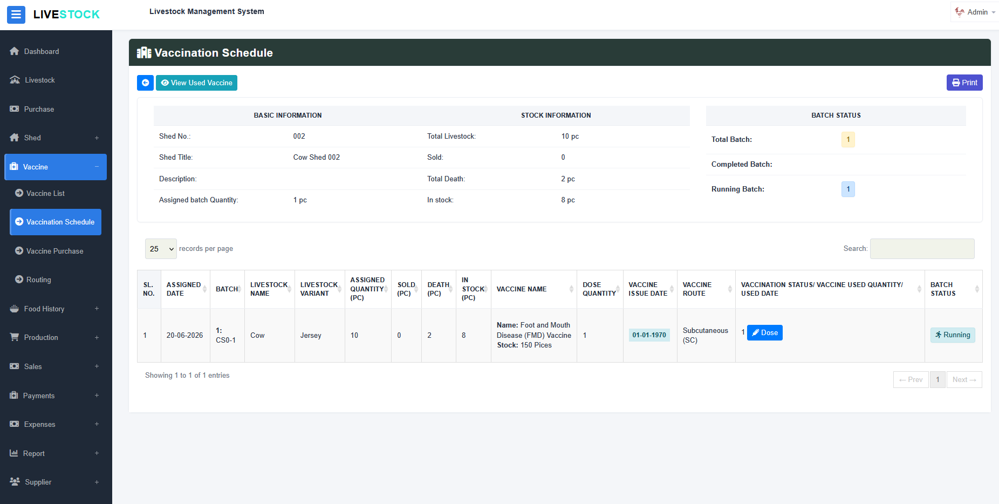
shed_wise_vaccine_date.pngClick Dose — a popup opens. You can see the vaccine stock and enter how much vaccine was used for this dose, then confirm. After completing the first dose, the second-dose button opens. You can revert or undo a dose.
You can edit a used vaccine by clicking View Used Vaccine from the Vaccination Schedule page.
→ Wasted Vaccine
If any vaccine is wasted from stock, you can add it as wasted vaccine.
Click Wasted Vaccine, a popup opens — enter the wasted quantity and submit. You can edit a wasted vaccine entry from the wasted vaccine details page.
■ Food
You can feed livestock shed and batch wise every day from the Food module. Basically, you can assign food to livestock batch-wise.
→ Create Food
Note: for creating food you need a product unit (see Product Unit above). You can edit food.
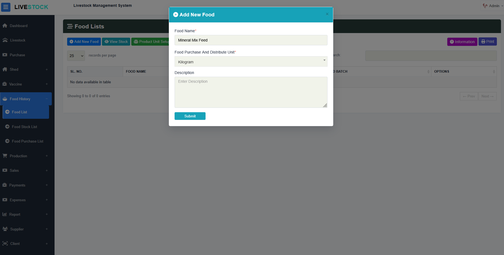
create_food.png→ Assign Batch for Food
Now assign food for a livestock batch. Click Assign Batch — a popup opens. Select shed and batch, and enter the daily food demand for this batch.
After assigning, click Food Details to open the assigned-batch details page where you can edit the assignment.
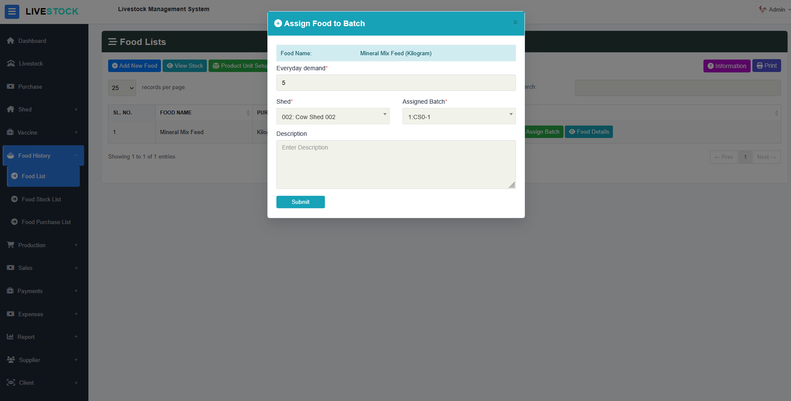
assign_food_to_batch.png→ Food Purchase
Without purchasing food you can't distribute it. Go to the Food module and purchase food — the flow is the same as other purchases.
You can add payments at purchase time or pay later. You can edit and delete a food purchase.
After purchasing food, it is added to food stock.
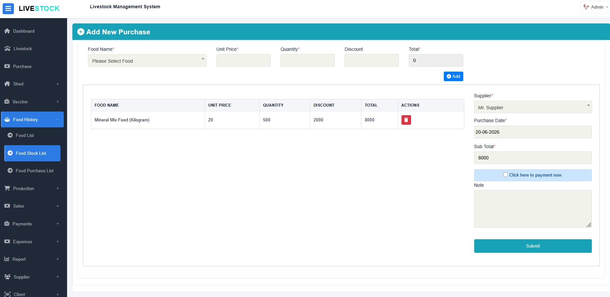
purchase_food.png→ Distribute Food
Every day you distribute food to the assigned batch. Go to the Food Stock module and click Distribute Food.
If food in stock is available, you can distribute; otherwise you can't. Make sure you have enough food in stock.
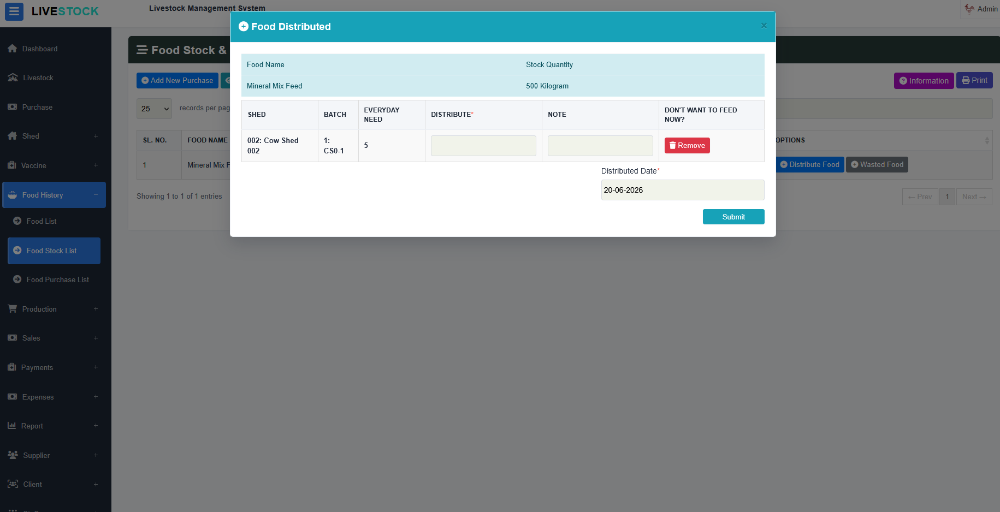
distribute_food.png→ Wasted Food
If any food is wasted from stock, you can add it as wasted food.
Click Wasted Food, a popup opens — enter wasted quantity and submit. You can edit a wasted food entry from its details page.
■ Production
Products received from each batch are stored in the Product module and can be sold from there. You will need a product category and a product.
→ Create Product Category
Go to the Production module and click Production Category from the sidebar. You can edit a product category.
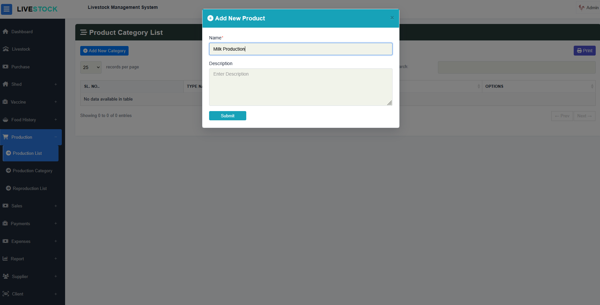
product_category.png→ Create Product
After creating the product category, create the product from the Production list.
Note: for creating a product you also need a product unit. You can edit a product from here.
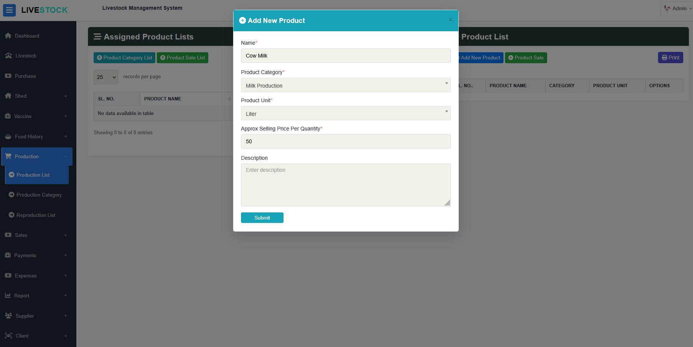
product_create.png→ Assign Batch for Production
Click Assign Product — a popup opens. Select shed and batch and enter the production demand for the batch.
The same product can come from multiple batches; you can assign each product to multiple batches.
You can edit assigned batches by clicking Details from the product list.
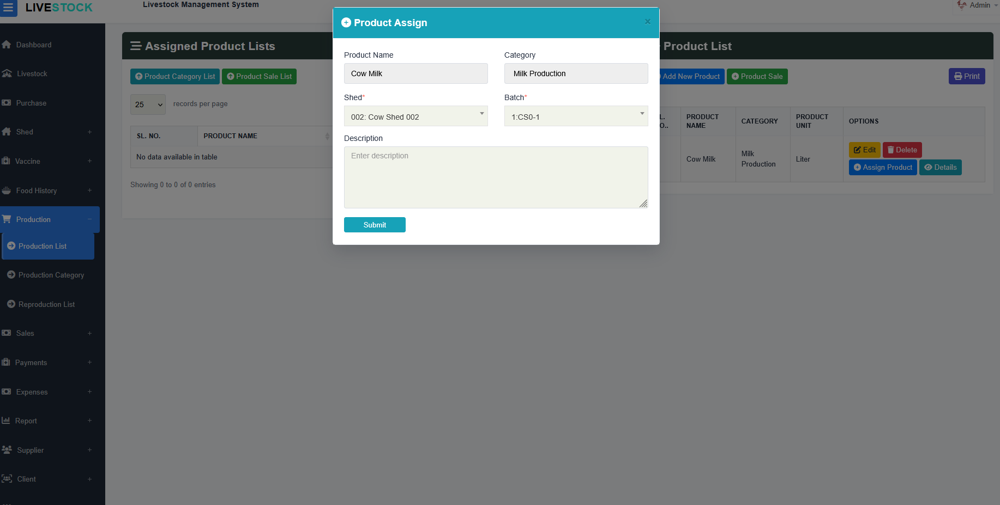
assign_product.png→ Stock product in assigned batch
Now add products to stock for the batch they came from.
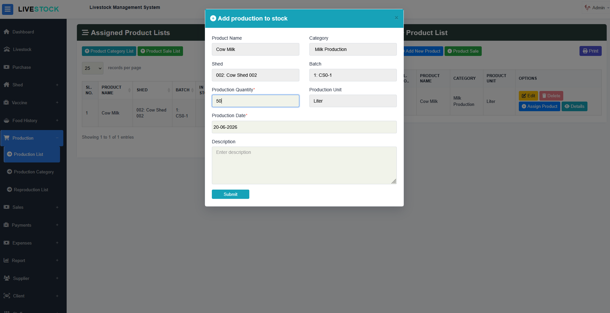
product_stock_add_popup.pngIf there is any mistake, you can edit the stock entry from here.
→ Waste Product
If any products are wasted, you can deduct them from stock.
Edit wasted products if any mistake.
→ Livestock Reproduction
If you get reproductive livestock or new births from a batch and want to nurture them, assign them to a shed.
Click Reproduction List from the sidebar and click Add New Livestock Reproduction — a popup opens. Fill the input fields and submit.
You can edit after assigning.
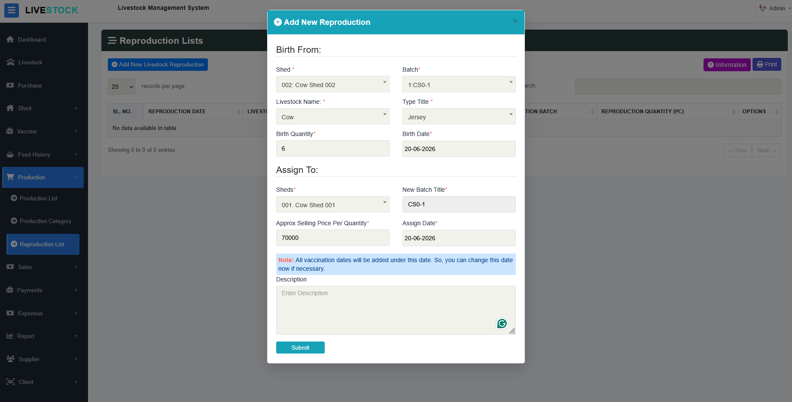
reproduction_add.png■ Client
→ Add New Client
Without creating a client you can't sell livestock and products. Go to the Client module and create a new client. After creating you can see a client ledger — all sale invoices and transactions under this client appear there. Sale invoice payments are managed from the ledger. You can also edit and delete a client from the client list.
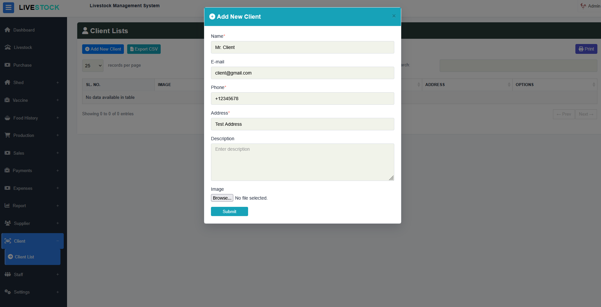
add_client.png■ Sale
Now you can sell livestock and products.
→ Livestock Sale
Go to the Sale module and click Livestock Sale List from the sidebar. Click Add New Sale — from here you can sell livestock.
You have to create a client before selling livestock. You can edit and delete a sale invoice.
New in v1.2+: the sale invoice view page now has a PDF download button.
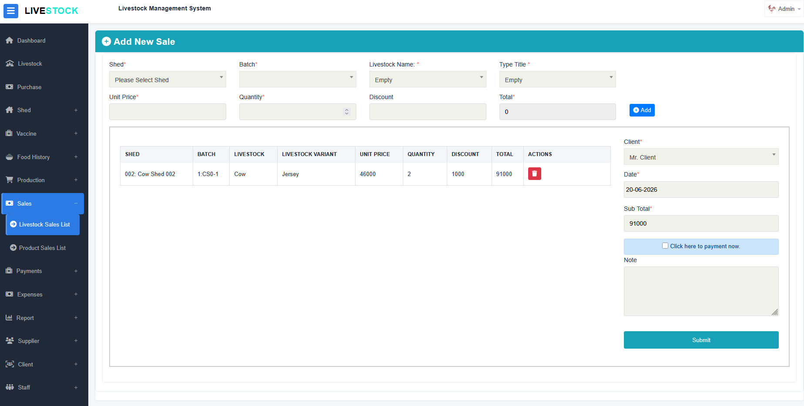
livestock_sale.png→ Product Sale From Stock
After storing products in stock you can sell them. Go to the Sale module and click Product Sale List from the sidebar. Click Add New Product Sale — from here you can sell products.
Before selling, make sure you have already created a client. You can edit and delete the sale invoice.
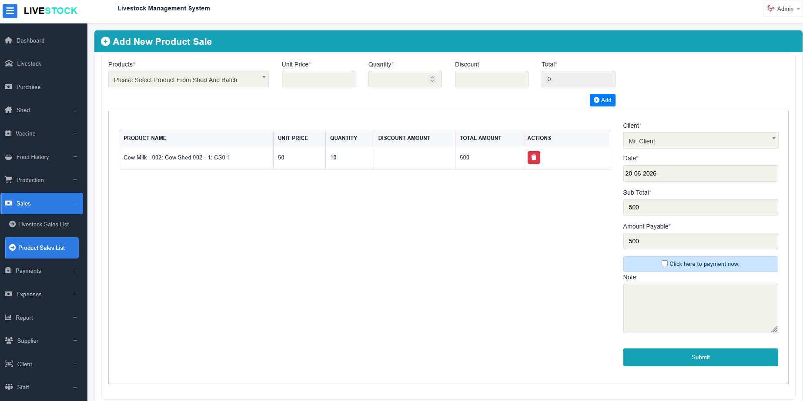
product_sale.png→ Livestock And Product Sale Payments
You can add livestock and product sale payments at sale time or later from the Payments module.
Go to the Client Payments module or the client ledger to add payments. You can edit payments by clicking View Payments from the client ledger.
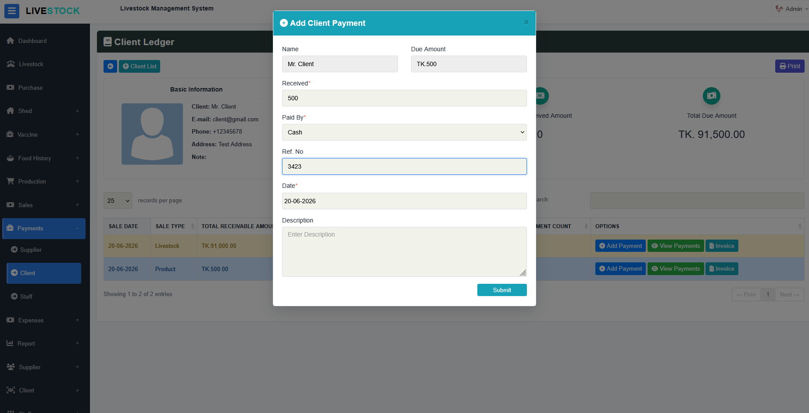
add_client_payment.png■ Other Expenses
The system has a module to maintain other expenses with categories. You can add other expenses and record multiple payments against them.
→ Create Expense Category
You can record expenses by category. First create an expense category. You can edit and delete an expense category.
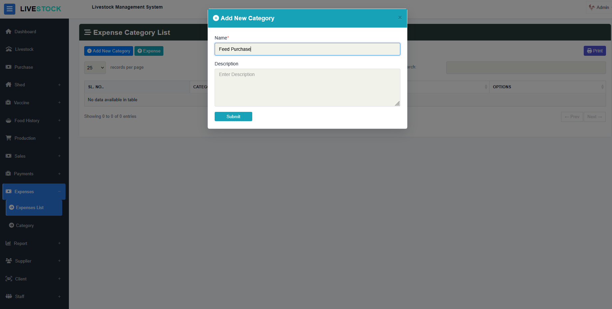
expesne_category.png→ Expense and Expense Payment
After creating expense categories, add expenses and expense payments. v3.0.1: the Expense list now has a date-range filter and CSV export button.
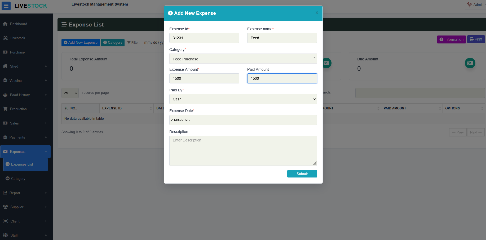
expense.png■ Staff
You can add staff and manage staff payments.
→ Create staff and staff payments
Go to the Staff module and create staff. You can add multiple staff. You can manage staff payment from the Staff Payments module.
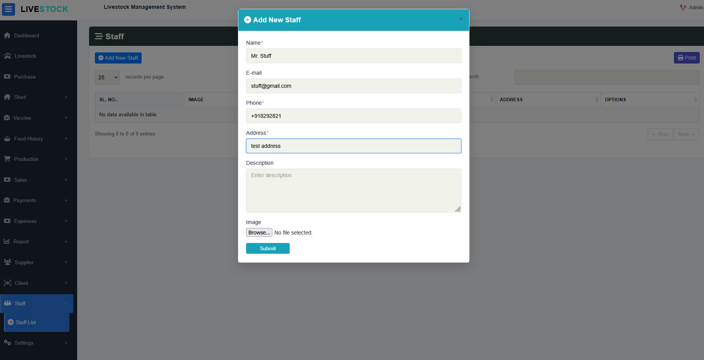
staff_add.png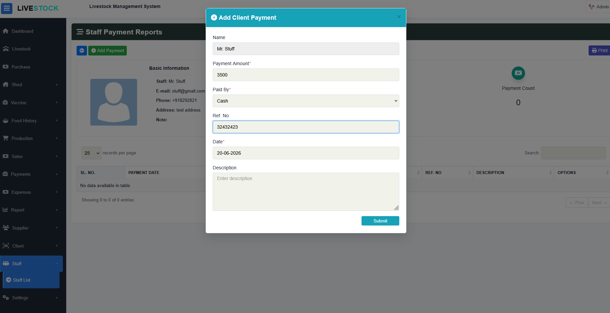
staff_payments.png■ Trash Bin v3.0.1
Every deletion in the system is a soft delete. The Trash Bin (admin-only, under Settings → Trash) gives admins a UI to see and restore deleted records.
Tabs cover every module — Livestock, Clients, Suppliers, Staff, Sheds, Livestock Purchases, Livestock Sales, Product Sales, Expenses. Each tab shows the 50 most recently deleted records with a Restore button. One click and the record is back exactly as it was.
■ Backup & Restore
The Backups page (admin-only) lets you export and restore your database without leaving the browser.
- Backup now — writes a SQL dump to
files/backups/. - Download — downloads the SQL file.
- Restore — loads a previously exported SQL file back into the database.
- Delete — deletes a backup file from disk.
5.Report
In the Report module you can overview your farm's reports.
■ Dashboard
After logging in, you see a dashboard with the most important reports.
New in v3.0.1: the dashboard now shows alert cards (low-stock batches, overdue supplier invoices, overdue client invoices, vaccinations due in the next 7 days) and a Recent Activity panel listing the 10 latest records across all modules.
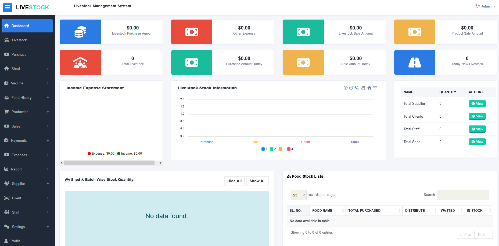
dashboard.png■ Batch Report
You manage the system batch-wise — assign livestock to shed by batch, distribute foods, vaccinations, reproductions, livestock sales, productions, product sales are all maintained batch-wise. So you get a batch-wise report.
To see a batch-wise report, go to the Report module and select Batch Analysis. First select Shed, then select Batch from the dropdown and search.
Then the batch report appears.
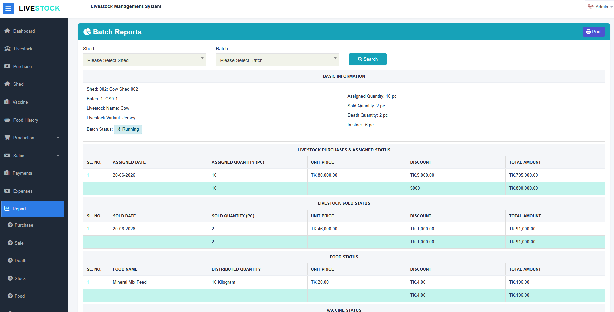
batch_analysis_report.png■ Shed Report
You can also see assigned livestock, distributed foods, vaccinations, reproductions, sales and productions shed-wise.
To see a shed-wise report, go to the Report module and select Shed Analysis. Select a Shed from the dropdown and search.
Then the shed report appears.
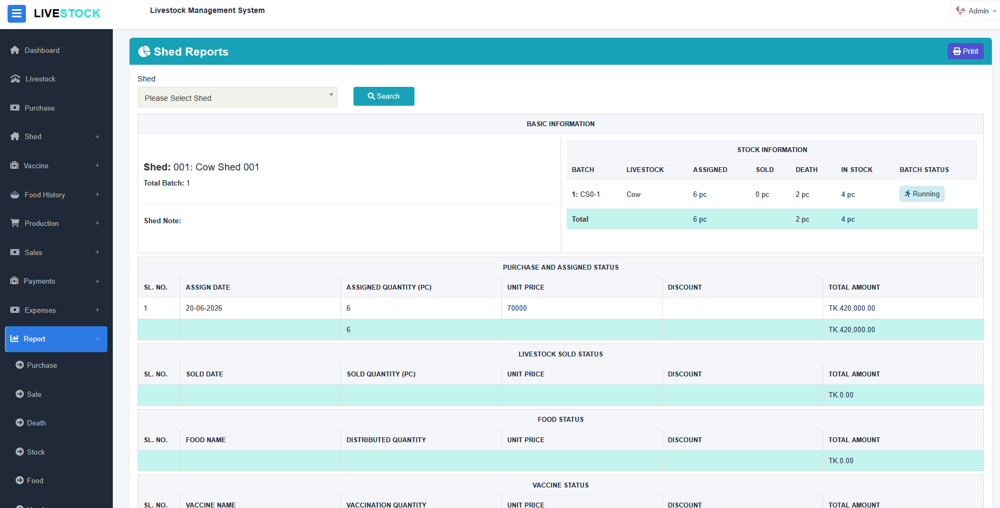
shed_analysis_report.png■ Finance Report
The Finance Report provides your whole expense and income report.
It also provides all purchase payable, purchase paid, purchase due, sale receivable, received, and receivable due amounts. It also reports staff payments and other expense payments.
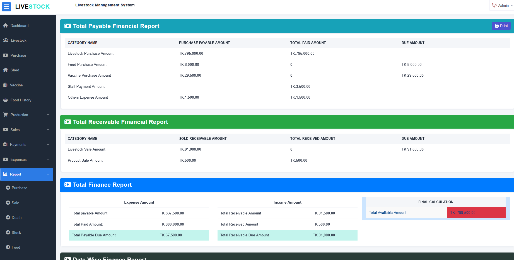
finance_report.pngYou can see a date-to-date finance report.
■ Other Reports
You can see other reports: livestock purchase, sale, death, food purchase, vaccine purchase, productions, supplier transactions, client transactions, staff payments and other expense payments.
In these reports you can see total, today, month-wise, date-to-date and year-wise filters.
→ Livestock Purchase Reports
→ Livestock Sale Reports
→ Livestock Death Reports
→ Food Reports
→ Vaccine Reports
→ Production Reports
→ Supplier Reports
→ Client Reports
→ Staff Reports
→ Other Expense Reports
6.Frequently Asked Questions — FAQs
What is Livestock Management System?
Livestock Management Software is a system that helps farmers to record and keep track of their livestocks from purchase, birth all the way to sale. It manages all activities of an animal batch-wise, as well as the most important dates in the lifetime of livestock. The system manages cattle, poultry, pigs, goats, rabbits and more. With this system you can keep track of the number of animals on the farm, the shed and batch with costing and performance metrics, and financial tracking from the sale of livestocks. You can also track death of livestock from shed. Another special feature is vaccination.
Can I keep an account of all kinds of cattle here?
Yes, you can keep accounts of all kinds of cattle here. You can also store all kinds of income and expenses for cattle and view reports.
Do you have any vaccination system here? How can I manage these?
Yes — we have a vaccination system. Users can add new vaccines to the system and purchase them for stock. A vaccination schedule lets users vaccinate the livestock by batch on time.
How can I manage livestock in this system?
After you buy cattle, you can send them separately to different sheds in new batches. Then you can give them food, vaccine or medicine according to the batch. If you get any produce from them, you can save it and sell it. You can view income and expenditure accounts by batch. You can also sell them from the shed.
Can I get a report about profit and loss?
Yes — you can view profit and loss reports by shed, batch and overall. You can also get monthly and date-to-date reports with filtering.
Can this system provide an account for other expenses?
Yes — users can add other expenses and generate automatic expense reports.
Where do I find recently-deleted records? v3.0.1
Go to Settings → Trash. Find the row under its module tab and click Restore — the record returns exactly as it was.
How do I export a list to Excel? v1.2+
Each primary list page (Livestock, Client, Supplier, Purchase, Sale, Expense) has an Export CSV button. The export is UTF-8 with a BOM so Excel opens it without character corruption. Apply a date-range filter first to export only that window.
How do I download an invoice as PDF? v1.2+
Open the invoice from the Purchase, Livestock Sale or Product Sale list and click the PDF button on the view page.
I can't sign in — the page just reloads.
Check that application/cache/sessions/ exists and is writable by the web server. CI 3 uses file-based sessions and silently fails to start a session if it cannot write here.
Wrong timezone in timestamps.
Go to Settings → General and pick your timezone from the dropdown. All future timestamps will follow it.